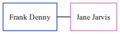

Frank Cecil Harcourt Denny
[
Home
] | [
Calendar
] | [
Surnames Index
] | [
Family History
]
Frank Denny
and was married to Jane Jarvis.
Family Tree

Generated by
ged2site
. Last updated on Nov 13, 2024